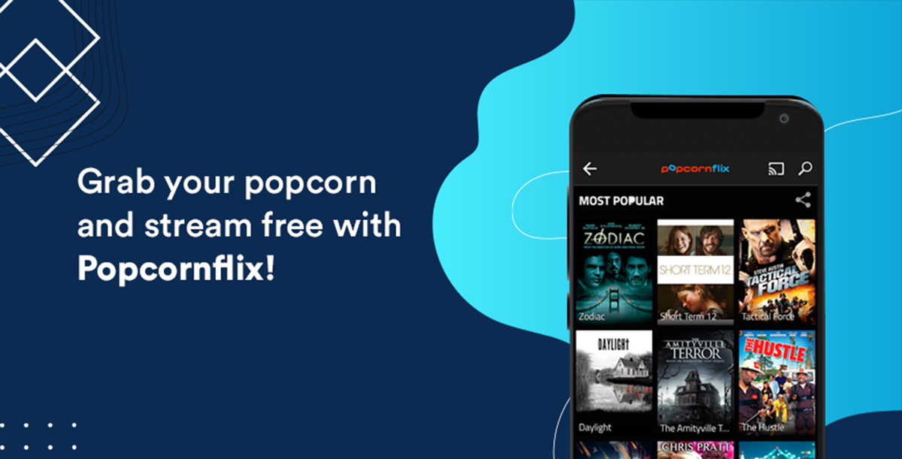

PopcornFlix: Streaming service for watching free movies & TV shows
Are you looking for an alternative to traditional cable TV or paid streaming services to avoid incurring additional costs? PopcornFlix free movies & TV shows is one of the choices for you. In this blog, we will give you a deeper look into the site, how it works, how often are the ads and whether it is the best choice out there for free movie streaming.

What is PopcornFlix?
It is a free streaming service that offers movies and TV shows across various genres. It boasts a vast collection, including classic films, indie movies, and documentaries. The content is available to watch PopcornFlix free movies & TV shows, and the site generates revenue from ads that play during the streaming of the content.
One unique feature of Popcorn Flix is its PopcornFlix Kids section, which features movies and TV shows that are appropriate for children. The section is curated and includes popular children's movies and TV shows like "The Adventures of Paddington Bear", "Chloe's Closet", and "Fraggle Rock".
Popcorn Flix is available in the United States, Canada, and various other countries, and can be accessed via its website, as well as through its apps on iOS, Android, Roku, and other platforms.
Is PopcornFlix free?
Yes, PopcornFlix is a free streaming service. It offers a wide selection of movies and TV shows that you can watch without any subscription or payment.
However, please note that Popcorn Flix may include ads during the streaming experience to support the availability of free content.
Is PopcornFlix legal?
It is a streaming platform that offers free movies and TV shows. It is considered a legitimate and legal service that operates through proper licensing agreements with content owners. Users can access and watch the content available on Popcorn Flix without engaging in any illegal activities.
However, it is always advisable to check the specific laws and regulations related to streaming services in your country to ensure compliance with local copyright laws.
Is PopcornFlix safe to use?
It is generally considered safe to use. It is a legitimate streaming service that offers licensed movies and TV shows for free.
However, as with any online platform, it is always recommended to exercise caution and take necessary precautions while accessing and using the service. Ensure that you visit the official Popcorn Flix website to avoid potential phishing or scam websites.
Additionally, it's a good practice to have up-to-date antivirus software on your device and use a secure internet connection when streaming content.
How often are the ads on PopcornFlix free movies & TV shows?
The frequency of ads on Popcorn Flix can vary depending on a few factors, such as the specific content you're watching and the region you're accessing the service from.
However, in general, PopcornFlix is an ad-supported streaming service, which means that you can expect to see ads before and during the content you're watching.
Typically, the ads on Popcorn Flix are shown at the beginning of the content and intermittently throughout the duration of the content. The exact frequency and length of the ads may also vary depending on the length of the content you're watching.
It's worth noting that some ad-supported streaming services, including PopcornFlix, may offer ad-free viewing options for a monthly fee. If you prefer to avoid ads altogether, you may want to consider upgrading to the ad-free version of the service.
How to download PopcornFlix on Firestick
To install Popcorn Flix on a Firestick, follow these steps:
-
Step 1: Turn on your Firestick device and go to the home screen.
-
Step 2: Navigate to the top menu and select the "Search" option.
-
Step 3: Using the on-screen keyboard, type "PopcornFlix" and press the "Search" button.
-
Step 4: From the search results, select the "Popcorn Flix" app icon.
-
Step 5: On the next screen, select the "Download" or "Get" button to download and install the app on your Firestick.
-
Step 6: Wait for the download and installation process to complete.
-
Step 7: Once the installation is complete, return to the Firestick home screen.
-
Step 8: Open the Popcorn Flix app from the "Your Apps & Channels" section or the "Recent" section of the home screen.
-
Step 9: Sign in or create a free account to start streaming movies and TV shows.
Once you manage to log in your account, you can start browsing the PopcornFlix library and streaming your favorite movies and TV shows.
How to use PopcornFlix on your device
To search for a specific movie or TV show on Popcorn Flix, follow these steps:
-
Step 1: Open the PopcornFlix app on your device.
-
Step 2: On the home screen, you will see several categories such as "Featured," "New Arrivals," "Most Popular," and more. You can scroll through these categories to find something to watch, or you can use the search function to find a specific title.
-
Step 3: To search for a specific movie or TV show, select the "Search" option in the top menu bar of the app.
-
Step 4: Using the on-screen keyboard, type the title of the movie or TV show that you want to watch.
-
Step 5: As you type, Popcorn Flix will automatically display search results based on your query. Select the title you are looking for from the search results.
-
Step 6: Once you select a title, you will be taken to a page with more information about the movie or TV show, including a synopsis, cast, and crew details.
-
Step 7: From here, you can choose to watch the movie or TV show, add it to your watchlist, or share it with others.
If you're looking for a streaming service with a massive content library, PopcornFlix may not be the best choice for you.
While Popcorn Flix does offer a wide range of movies and TV shows, it's worth noting that its content library is not as extensive as some of the larger streaming services like Netflix, Amazon Prime Video, or Hulu.
How to download movies from PopcornFlix
Unfortunately, Popcorn Flix does not offer a download feature to save movies for offline viewing. PopcornFlix is a streaming service that allows you to watch movies and TV shows for free, but the content is only available for online streaming.
If you want to watch PopcornFlix free movies & TV shows offline, you can consider using a screen recorder app to record the movie while it's playing on your device.
However, please note that this may not be legal in some regions and could be a violation of its terms of service. So, make sure to check your local laws and the service's policies before using a screen recorder to download movies from PopcornFlix.
Why is PopcornFlix not working?
There could be several reasons why Popcorn Flix may not be working for you. Here are a few possible explanations:
-
Server issues: Temporary problems with PopcornFlix's servers can cause the service to be unavailable or experience performance issues.
-
Internet connection: A slow or unstable internet connection can prevent Popcorn Flix from loading or streaming content properly.
-
Device compatibility: PopcornFlix may have specific device or browser requirements. Ensure that you are using a compatible device and an updated web browser to access the service.
-
Geographical restrictions: Popcorn Flix's availability may be limited based on your location. Licensing agreements and regional restrictions can restrict access to the service in certain countries or regions.
-
Ad blockers or VPNs: Ad-blocking software or VPNs can interfere with PopcornFlix's functionality. Temporarily disabling these tools can help determine if they are causing the issue.
If the problem continues, it is recommended to visit the official Popcorn Flix website or contact their customer support for further assistance.
What is the best PopcornFlix alternative?
While Popcorn Flix is a popular and convenient streaming service, there are a few potential drawbacks to consider such as limited content, limited availability, ad-supported feature, etc. If these factors are stopping you from making an account on PopcornFlix free movies & TV shows, give OnStream a try.
OnStream offers a range of premium features at no cost to the user, making it an attractive alternative to Popcorn Flix. Here are the main key features of OnStream:
-
Free Streaming: OnStream is a completely free streaming service with no hidden fees, ads, or popups. Users can enjoy a vast collection of movies and TV shows without any payment required.
-
No Sign-up or Registration: Unlike other streaming platforms, OnStream does not require users to sign up or register. You can start streaming immediately without any hassle.
-
Multilingual Subtitles: OnStream provides multiple language subtitle options, allowing you to choose subtitles that suit your preferences and enhance your viewing experience.
-
Download for Offline Viewing: With OnStream, you have the option to download your favorite movies and shows for offline viewing. This means you can enjoy your content even without an internet connection.
-
Personalized Watchlist: OnStream allows you to create a personalized watchlist of your favorite movies and shows. You can curate your own collection and easily access them whenever you want. Additionally, you can share your watchlist with others, allowing them to discover new content.
-
Daily Content Updates: OnStream regularly updates its content library, ensuring that users have access to the latest movies and TV shows. This makes it one of the quickest streaming services to provide new releases.
Overall, OnStream offers a seamless and convenient streaming experience with its wide selection of content, user-friendly interface, and valuable features, all at no cost to the user.
We hope this blog answers your questions related to PopcornFlix and helps you decide which site suits you better. PopcornFlix free movies & TV shows is great if you don't mind watching some ads to support the site and OnStream is a better choice if you prefer watching movies without any hassle.